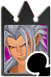
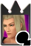
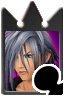
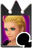
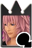
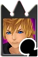

|  |
Captain Serious |
Xemnas |
- Leadership
- Decision maker
- Assign jobs that best fits their role
|
- Comes across rude sometime
- Sometimes disregards his team's feelings
- Doesn't have a great sense of time
|
Vexen, Zexion, and Larxene |
Demyx and Luxord |
Marluxia and Roxas |
|
Major Quirky |
Demyx |
- Can break a lot of awkwardness with people
- Easy to relate to
- Easy to adapt
|
- Doesn't get along with serious people
- Might come across as weird
- Seen as someone who isn't bright
|
Zexion, Marluxia, Luxord |
Xemnas and Vexen |
Larxene and Roxas |
|  |
Specialist Meticulous |
Vexen |
- Always makes sure
everything is done correctly
- Organize
- Eliminates any inconvenience
|
- Hold onto too much information
- Bad time management
- Too strict
|
Xemnas, Zexion, Roxas |
Demyx and Larxene |
Marluxia and Luxord |
|  |
Private Adapt |
Zexion |
- Easy to adjust
- Can work well under pressure
- Easy person to work with overall
|
- Indecisive
- Needs to be monitered
- Forgetful
|
Xemnas, Demyx, and Vexen |
Larxene and Luxord |
Marluxia and Roxas |
 |
Specialist Impulse |
Larxene |
- Spontaneity
- Creative
- Confident
|
- Lack of foresight
- Liability
- Bad decision maker
|
Xemnas, Marluxia, Luxord |
Vexen and Zexion |
Demyx and Roxas |
|  |
Lieutenant Flamboyant |
Marluxia |
|
- Does Not read the room
- Not serious
- Hard to understand
|
Demyx, Larxene, and Roxas |
N/A |
Xemnas, Vexen, Zexion, and Luxord |
|
Corporal Lax |
Luxord |
- Flexibility
- Open-Minded
- Low Stress
|
- Lack of Motivation
- Procrastination
- Lack of Discipline
|
Demyx, Larxene, Roxas |
Xemnas, and Zexion |
Vexen and Marluxia |
 |
Sergeant Empathy |
Roxas |
- Selfless
- Compassion
- Mediator
|
- Careless of himself
- Emotional Fatigue
- Boundaries
|
Vexen, Marluxia, and Luxord |
N/A |
Xemnas, Demyx, Zexion, and Larxene |